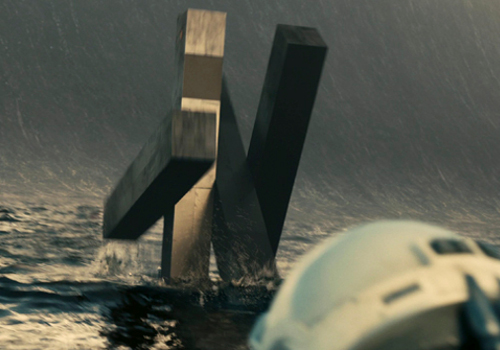
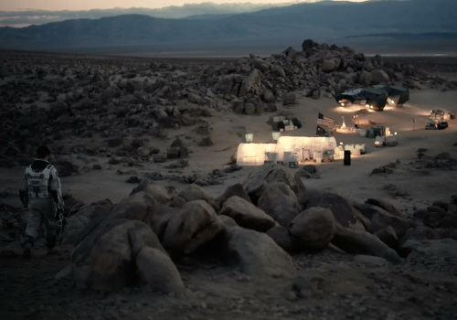

Gargantua

Agujero negro supermasivo
Imagen espectacular del anillo de acreción cercano al horizonte de sucesos de Gargantua, el agujero negro supermasivo donde nuestros protagonistas se acercaron para tomar unas fotos para Instagram

Gargantua
Imagen espectacular del anillo de acreción cercano al horizonte de sucesos de Gargantua, el agujero negro supermasivo donde nuestros protagonistas se acercaron para tomar unas fotos para Instagram
TARS
Imagen del robot TARS, mezcla del ordenador HAL de la peli 2001 pero con un traje de Mies Van der Rohe, tomandose un merecido baño en una playa del planeta de Miller.
Miller

Nuestros amigos paseando por las playas del planeta de Miller, ideal para permanecer eternamente joven, ya que una hora de estancia en este balneario corresponde a 7 años en el planeta Tierra. Son las ventajas de tener un agujero negro como vecino.
Teseracto

Nuestro protagonista Cooper paseando en la atracción estrella de Gargantua, el teseracto de 4 dimensiones físicas y una temporal, que le permite visitar cualquier momento de su vida pasada.
Edmunds
El único planeta medianamente habitable que visitan nuestros protagonistas después de pasearse por las playas de Miller y el mundo helado de Mann. Solo nuestra protagonista pudo llegar a él.
Mann

Nuestros amigos pescando un resfriado en el soleado planeta de Mann donde hasta las nubes se congelan. Llegaron tan tarde que el pobre Mann se echo una siesta casi eterna esperando que alguien regresara a rescatarlo.